图A｜侵蚀与土壤健康响应：全域、环境匹配与局部回归
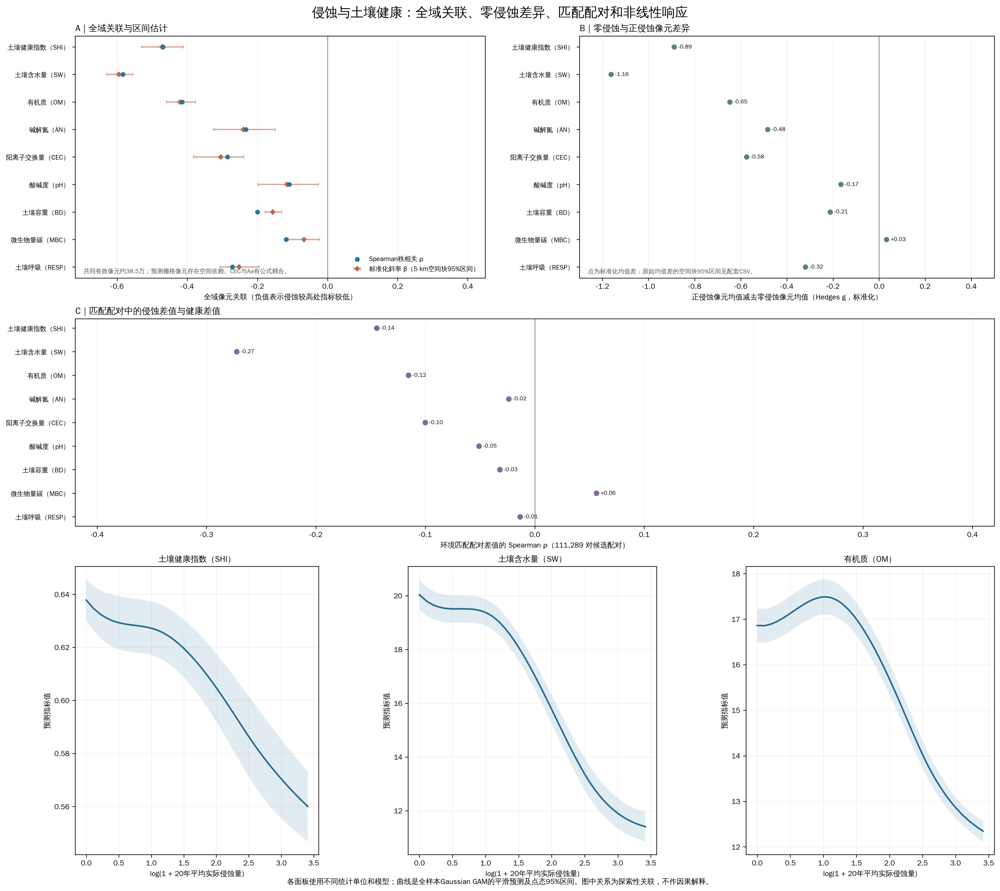
A面板比较全域像元中的Spearman相关和标准化斜率；B面板显示零侵蚀与正侵蚀像元的标准化均值差（Hedges g）；C面板展示第二套环境匹配方案的配对差值相关；下排为SHI、SW和OM的全样本Gaussian GAM响应曲线及点态95%区间。各统计量的单位和估计目标不同，不能直接互换。CEC按包含Aa项的原始值恢复公式计算，其相关存在代数耦合。
共26幅不重复图件：A–I展示总体响应、局部模型、环境匹配、SEM控制和分组路径；J–T补充跨总体控制敏感性、方法比较、拟合、局部空间关系、环境差异和两阶段侵蚀分析；U–V增加九指标局部系数地图和GWR/MGWR差值地图；W–Z展示平行维度、链式维度、九结局及两部分侵蚀的SEM路径结构。方向评分敏感性图T沿用已保存图件。预测栅格结果属于探索性条件关联，不是独立实测验证或因果结论。图中指标名统一写作CEC。

A面板比较全域像元中的Spearman相关和标准化斜率；B面板显示零侵蚀与正侵蚀像元的标准化均值差（Hedges g）；C面板展示第二套环境匹配方案的配对差值相关；下排为SHI、SW和OM的全样本Gaussian GAM响应曲线及点态95%区间。各统计量的单位和估计目标不同，不能直接互换。CEC按包含Aa项的原始值恢复公式计算，其相关存在代数耦合。
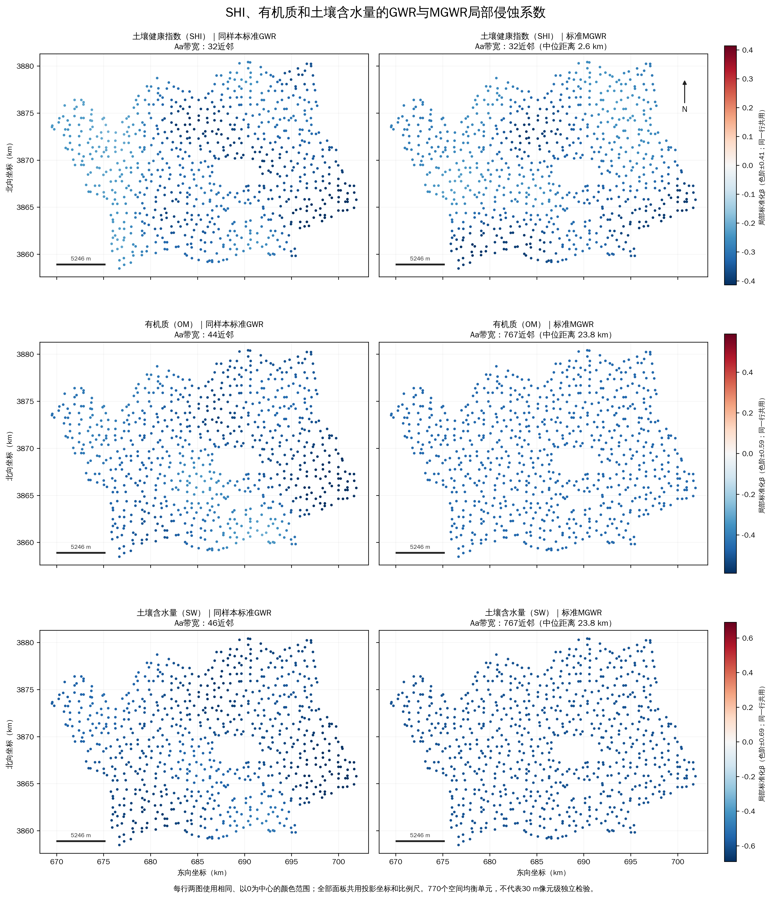
显示同一组770个空间均衡单元上的局部系数。每一行比较同样本标准GWR和标准MGWR，使用该指标专属且以0为中心的相同色阶；图内标出Aa暴露的近邻带宽、比例尺和指北箭头。MGWR允许各变量使用不同空间带宽。OM和SW的Aa带宽达到预设767近邻上限（中位距离约23.8 km），只能说明模型偏向较宽尺度，不能解释为精确作用半径。
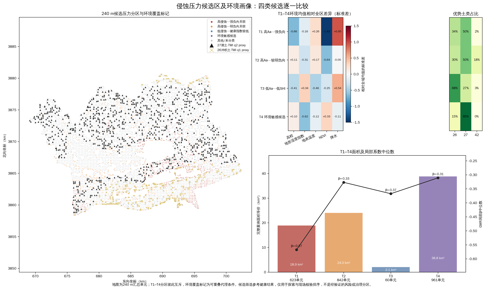
地图显示互斥主分区T1–T4及其他单元；三角形和叉号分别表示27潮土TWI第二组、26冲积土TWI最低组的可重叠环境代理条件。右侧逐项比较T1高侵蚀—强负向关联、T2高侵蚀—较弱负向关联、T3低侵蚀—低SHI、T4环境敏感候选四组的环境画像、优势土类比例、面积和局部GWR系数。候选筛选参考健康结果，适合安排探索性现场核查顺序，不是经验证的风险图或治理边界。
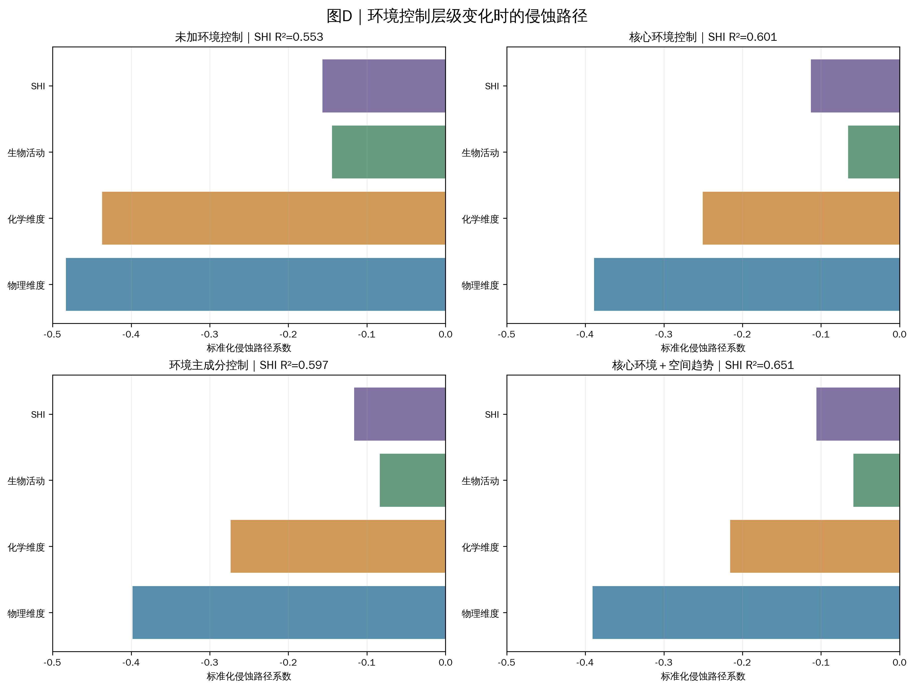
比较同一批环境变量完整像元中，不同控制条件下侵蚀与健康维度的标准化关联。四种条件依次为：不加入环境变量；加入高程、地形湿度、植被、地表温度和土类；用环境主成分和土类控制；在核心环境变量基础上再加入空间位置趋势。四个面板共用相同横轴范围，便于比较系数大小。SHI的R²表示预测面的拟合程度，不是因果解释比例。
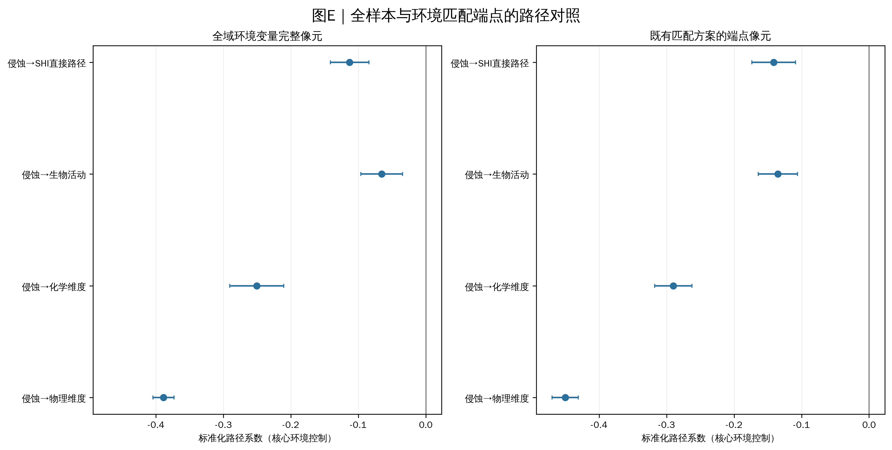
两侧使用相同环境变量控制：左侧为全区环境变量完整像元，右侧为既有环境匹配方案的端点像元。该方案要求环境距离不超过0.35、两端相距不超过1,000 m，且同组侵蚀百分位差至少0.50。点和线表示标准化关联及95%区间；这组端点只代表该匹配方案。
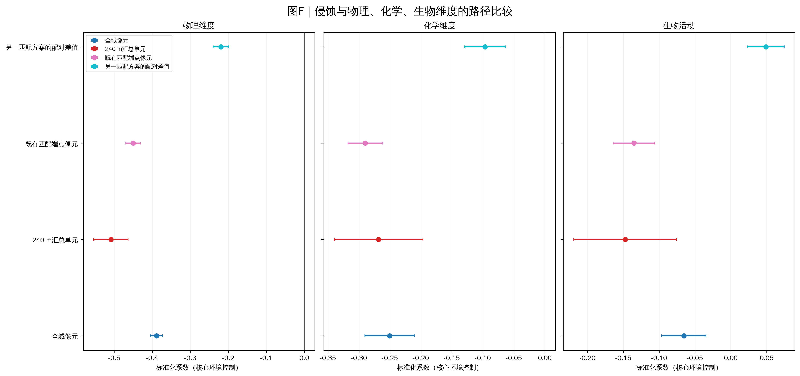
在相同环境变量控制下比较全域像元、240 m汇总单元、既有匹配方案端点和另一套匹配配对差值。两套匹配要求不同：第一套环境距离阈值0.35、地理距离上限1,000 m、组内侵蚀百分位差至少0.50；第二套阈值0.75、距离上限500 m、每类土壤分8组、组内侵蚀百分位差至少0.30。配对差值以每一对像元为单位，不能与端点像元回归系数直接比较。
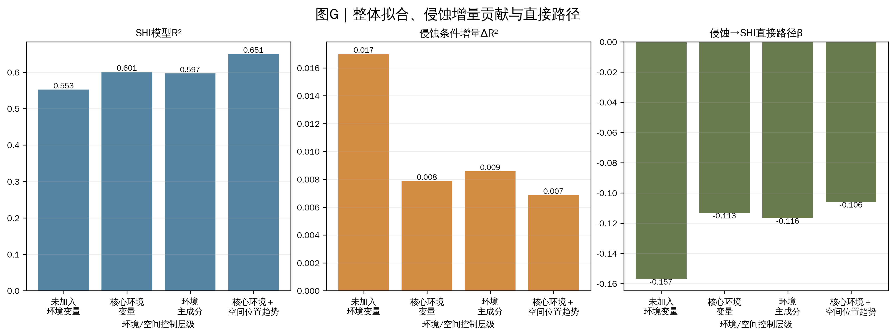
三幅图依次显示SHI模型拟合度、在已有控制条件上加入侵蚀后的R²增量、侵蚀与SHI的直接标准化关联。控制条件从未加入环境变量，逐步变化为核心环境变量、环境主成分，以及核心环境变量加空间位置趋势。R²增量表示当前模型内的预测变化，不代表因果贡献。
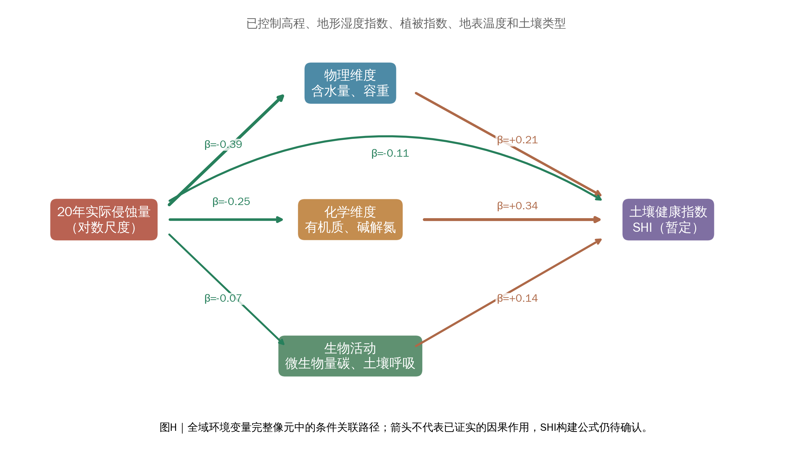
路径图显示在控制高程、地形湿度、植被指数、地表温度和土类后，侵蚀与三类健康维度的关联，以及这些维度与SHI的条件关联。β是标准化路径系数；箭头表示模型中设定的条件关系，不代表已经证实的因果中介。SHI原始计算配方和权重尚待确认。
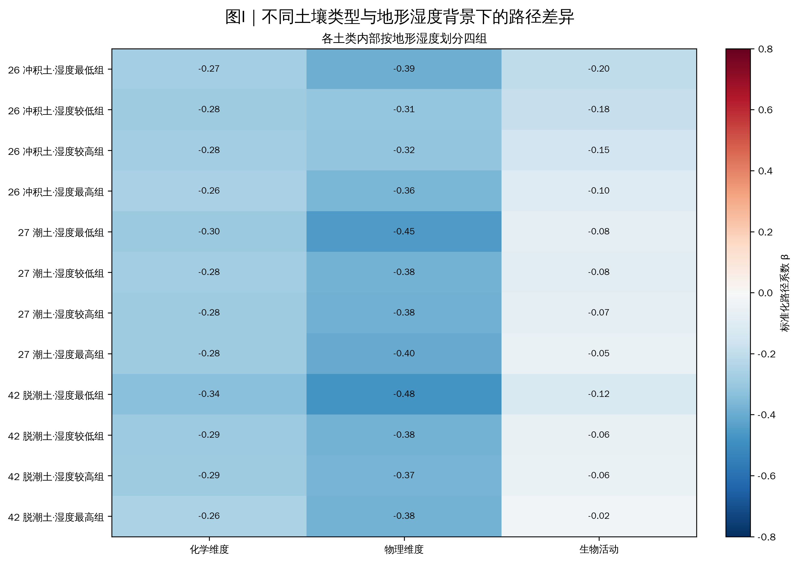
在冲积土、潮土和脱潮土各自内部，按地形湿度指数从低到高分成四组，再估计侵蚀与物理、化学、生物活动维度的标准化关联。图中每类土的四行依次代表湿度最低、较低、较高和最高组。分组结果受候选筛选影响，不是正式组间差异检验。
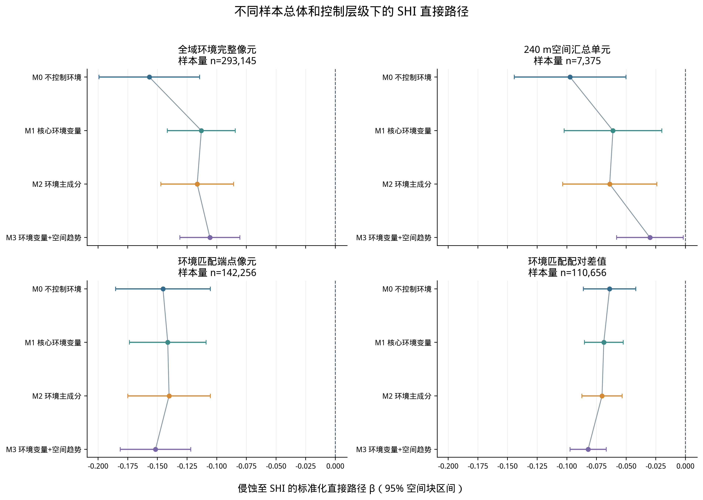
四个面板分别表示全域环境完整像元、240 m汇总单元、环境匹配端点和匹配对差值。M0至M3逐步改变环境/空间控制。横线为5 km空间块聚类区间；该图用于显示模型条件敏感性，不作因果解释。
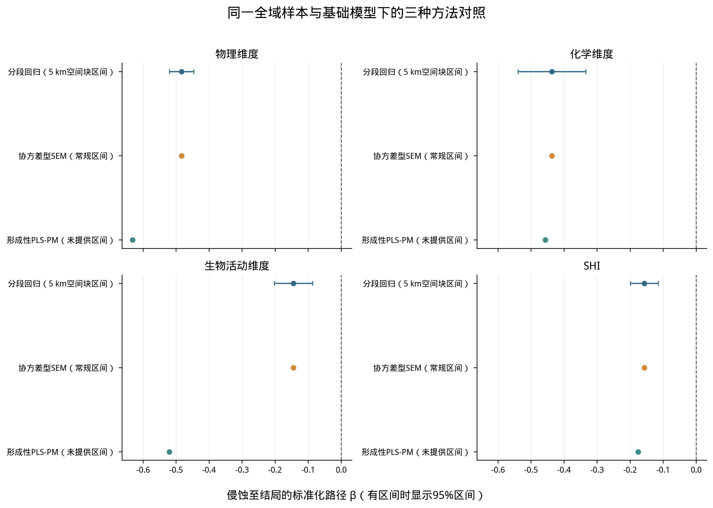
比较分段路径模型、协方差型SEM与形成性PLS-PM在同一全域样本上的侵蚀路径。分段模型区间按5 km空间块聚类；协方差型SEM区间按常规独立同分布假设计算；PLS-PM未提供区间，故只显示点估计。各模型的构念定义和估计假设不同，系数仅用于方向和量级的探索性对照。
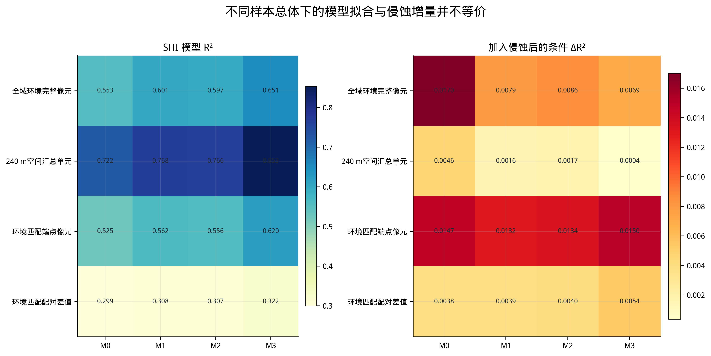
左图为SHI模型内R²，右图为在同一控制条件上加入侵蚀变量后得到的条件ΔR²。M0不控制环境；M1加入高程、地形湿度、植被、地表温度和土类；M2使用环境主成分；M3在核心环境变量上增加空间位置趋势。更高的总拟合度不等于侵蚀具有更大的独立增量；所有数值均为表观模型内拟合。
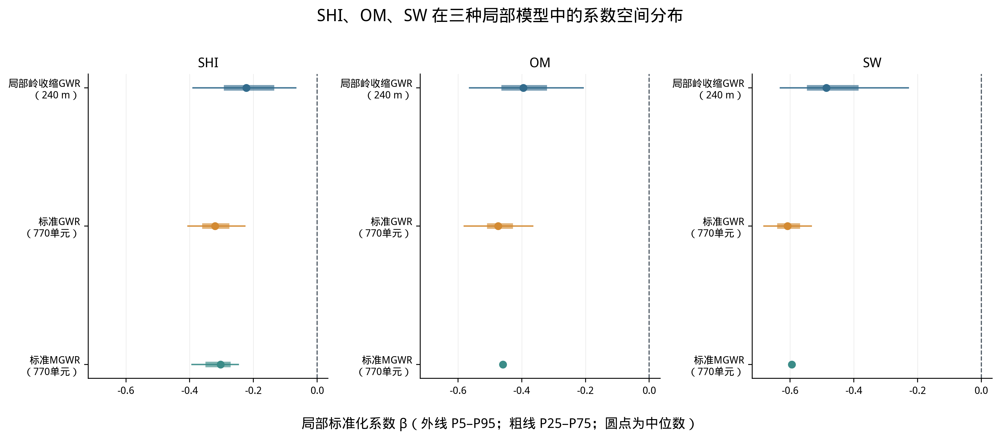
比较SHI、OM和SW在局部共线性收缩GWR、同样本标准GWR及标准MGWR中的局部系数分布。线段表示空间单元间的系数分位数范围，不是置信区间；三类模型使用的空间单元数和模型设定不同。
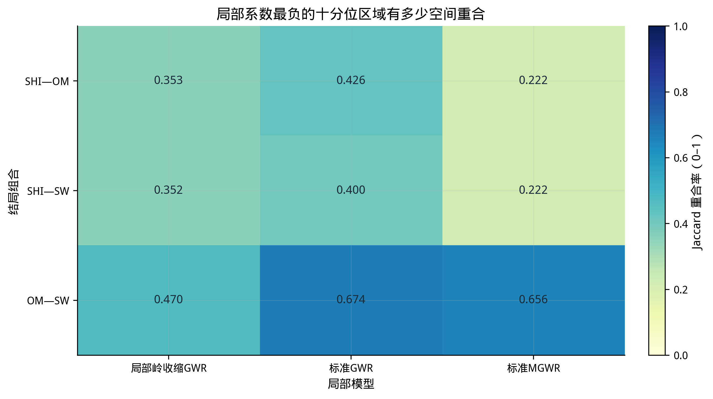
每格比较两个结局各自局部系数最低十分位的空间单元集合。Jaccard值越高，两个低系数区域的空间重合越多；它不表示两种结局的系数相等，也不构成显著性检验。
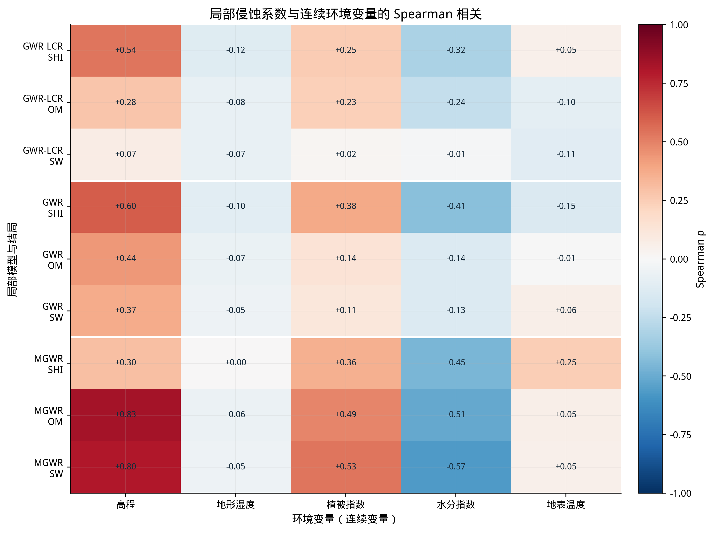
热图展示局部侵蚀系数与高程、地形湿度、植被、水分指数和地表温度的Spearman相关。正负号表示空间高低排序的共同方向；相关不等于环境变量造成了局部系数变化。
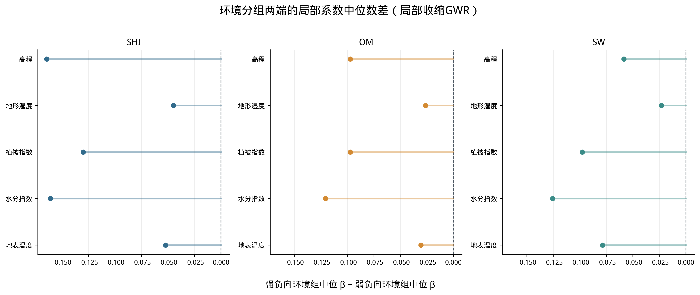
每个点是按各环境变量分组后，局部系数最负组与最弱负组的中位数之差。越负表示两个已挑出的组之间差异越大；分组选择参考了结果本身，因此只能作为探索性定位，不是环境因果效应或正式组间显著性检验。
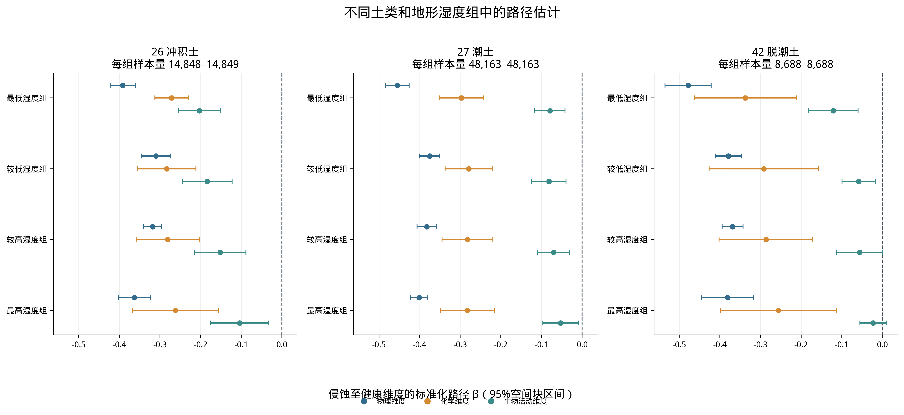
每个面板对应一个土类，纵向按该土类内部的地形湿度四分位从低到高排列，颜色区分物理、化学和生物活动维度。区间按5 km空间块聚类。结果来自结果导向挑选的环境组，组间差异尚未通过正式的多组系数等值检验。
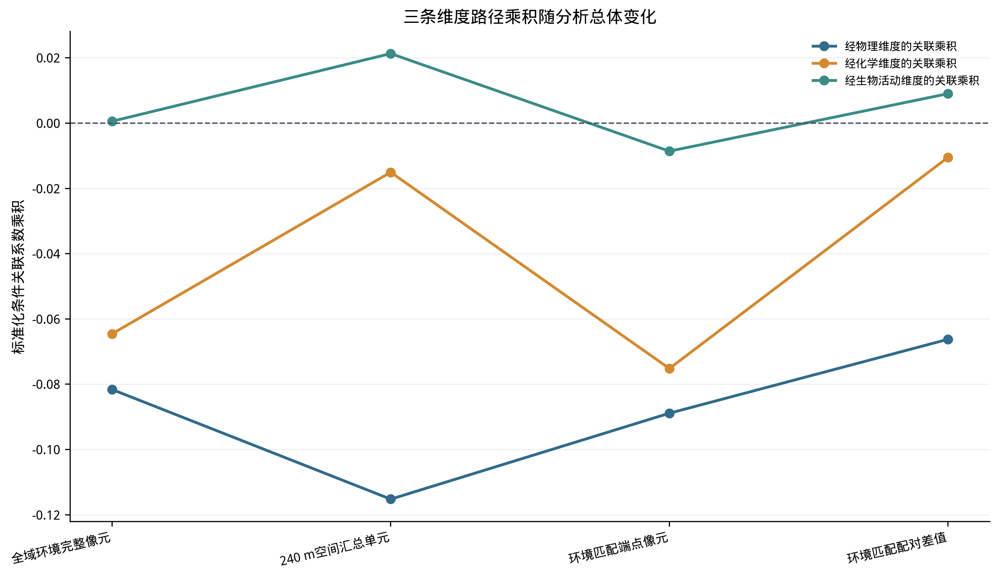
图中为侵蚀到单个健康维度、再到SHI的标准化条件关联系数乘积，并比较四类分析总体。它不是经因果识别的中介效应；当前没有为这些乘积计算置信区间，图线只连接不同总体的点估计。
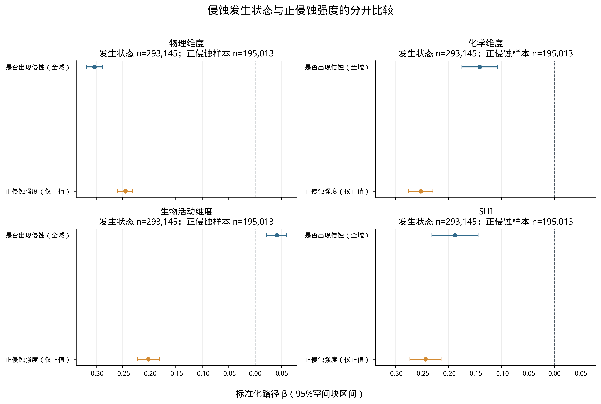
左侧路径表示全域像元从零侵蚀到正侵蚀的状态关联；右侧路径只在正侵蚀像元中表示侵蚀强度关联。二者的样本数与暴露定义不同，不应相减或解释为因果分解。图示SHI和三类健康维度，区间按5 km空间块聚类。
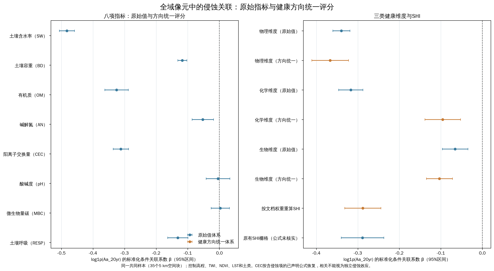
对比八项指标原始值、方向统一评分、健康维度和SHI的条件关联。CEC标签仍写CEC，但因恢复公式含侵蚀项，其关联不作为独立侵蚀效应；方向转换后的SHI未精确复现既有SHI栅格，所以只作敏感性比较。
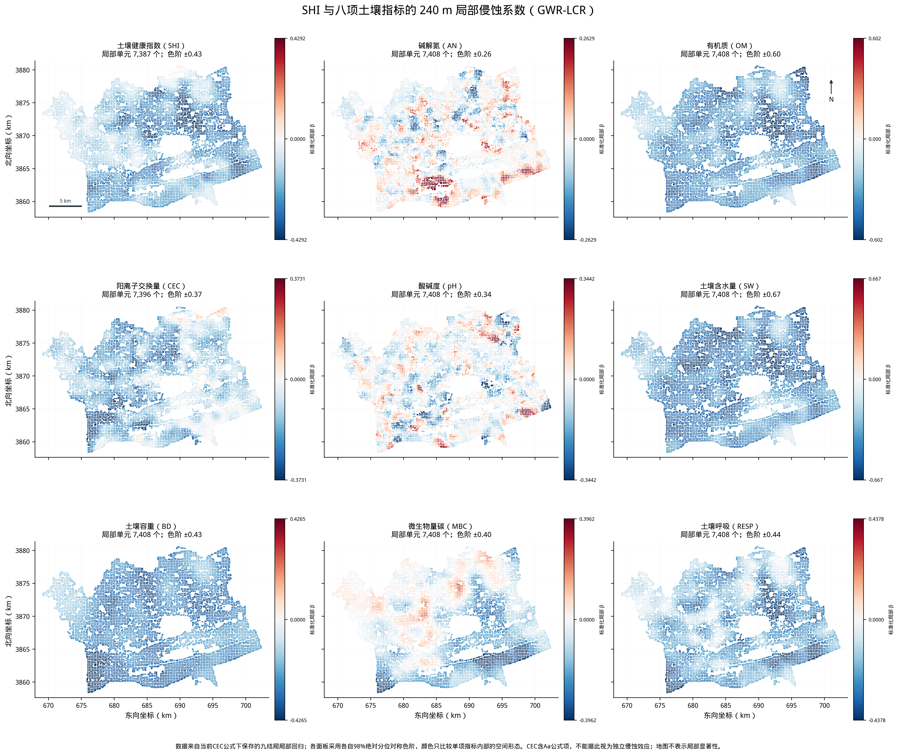
九个小图使用当前CEC数据版本下保存的GWR-LCR局部标准化系数和真实投影坐标。每个指标采用自己的98%绝对分位对称色阶，适合查看各指标内部的空间形态，不宜直接比较不同面板的色彩深浅。局部置信区间是模型内区间，没有用于显著性热点判定；CEC的恢复公式含侵蚀项，存在代数耦合。
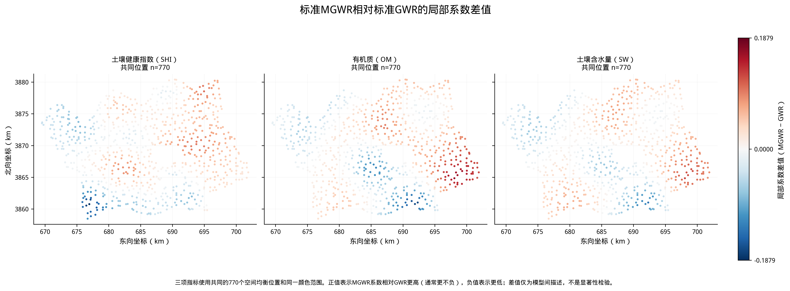
三幅地图显示770个共同空间位置上MGWR减去标准GWR的局部标准化系数差值，使用共同颜色范围。正值表示MGWR估计相对更高，负值表示相对更低；该差值是模型对照，不代表显著区域或因果差异。
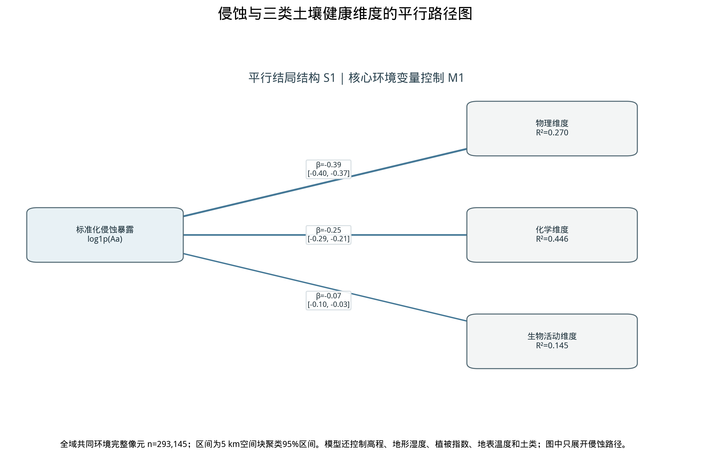
按已保存的S1分段路径模型绘图；箭头标签给出标准化β和5 km空间块聚类95%区间，结局框内为R²。模型控制高程、地形湿度、植被指数、地表温度和土类（M1）；图中仅画侵蚀到三类健康维度的焦点路径。箭头表示条件关联，不是已验证的因果关系。
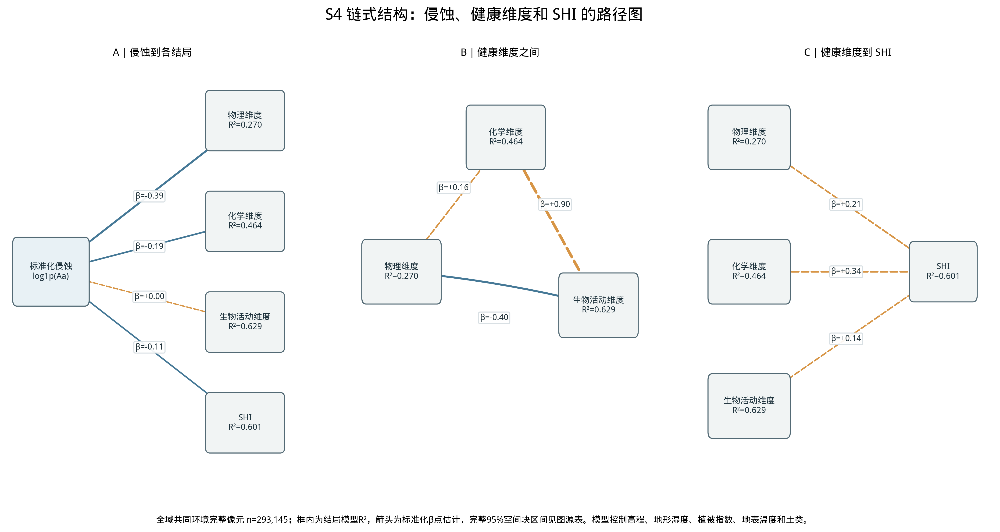
将S4链式结构拆成三组便于阅读的路径：侵蚀到健康结局、健康维度之间、健康维度到SHI。框内为各结局模型R²，箭头为标准化β点估计；完整95%空间块区间见图源表。模型控制核心环境变量和土类，图中箭头是条件关联，不是已证实的中介因果链。
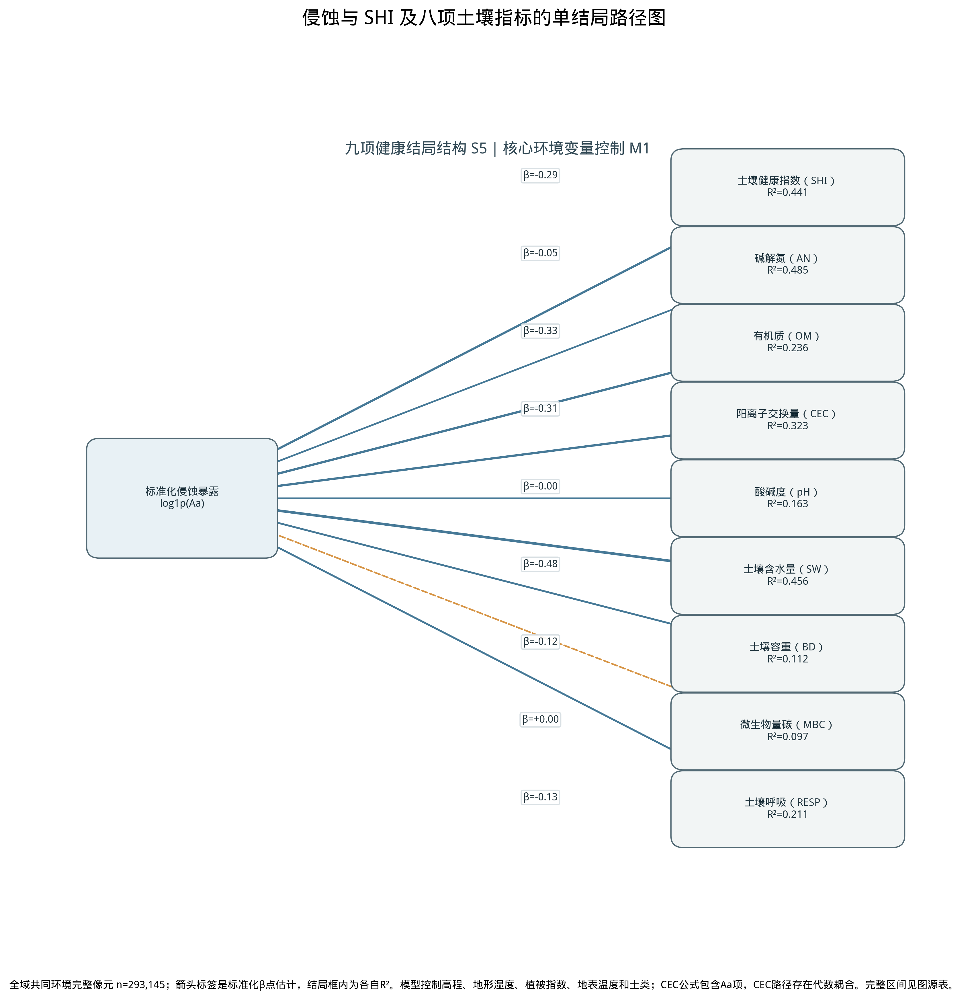
展示S5结构下侵蚀暴露到SHI和八项土壤指标的九条标准化条件路径；结局框中的R²来自各自单结局模型。M1控制高程、地形湿度、植被指数、地表温度和土类。CEC标签仅写CEC，但恢复公式含侵蚀项，因此该路径存在代数耦合。箭头不是因果证据，区间见源表。
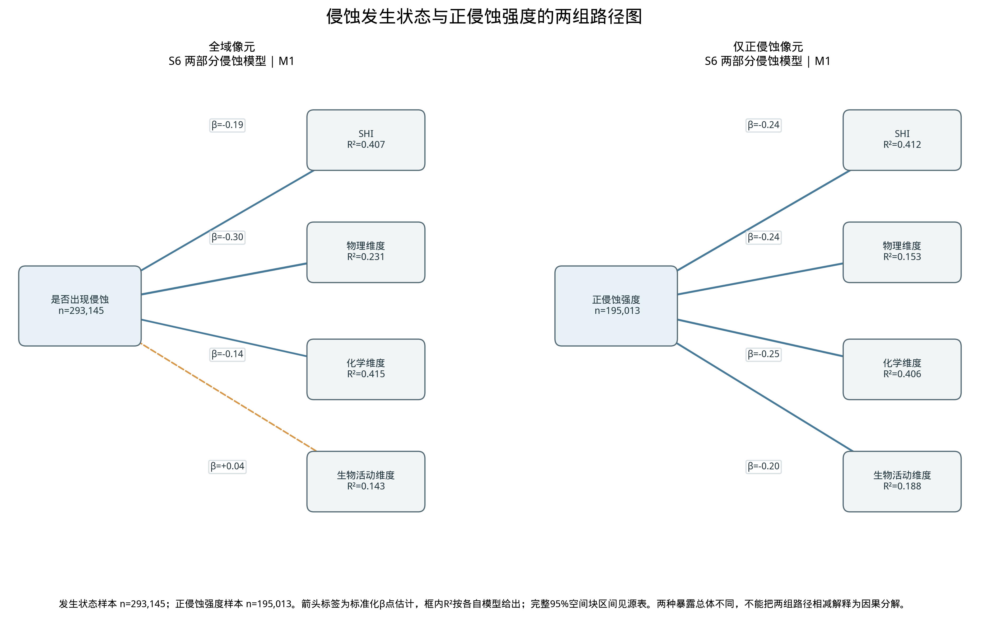
左右两图分别展示S6中侵蚀发生状态和正侵蚀强度到SHI及三类健康维度的标准化条件路径；左侧使用全域样本，右侧只使用正侵蚀像元。框内是各自模型R²，箭头点估计的95%空间块区间见图源表。两种暴露定义和样本不同，不能相减或视为因果分解。